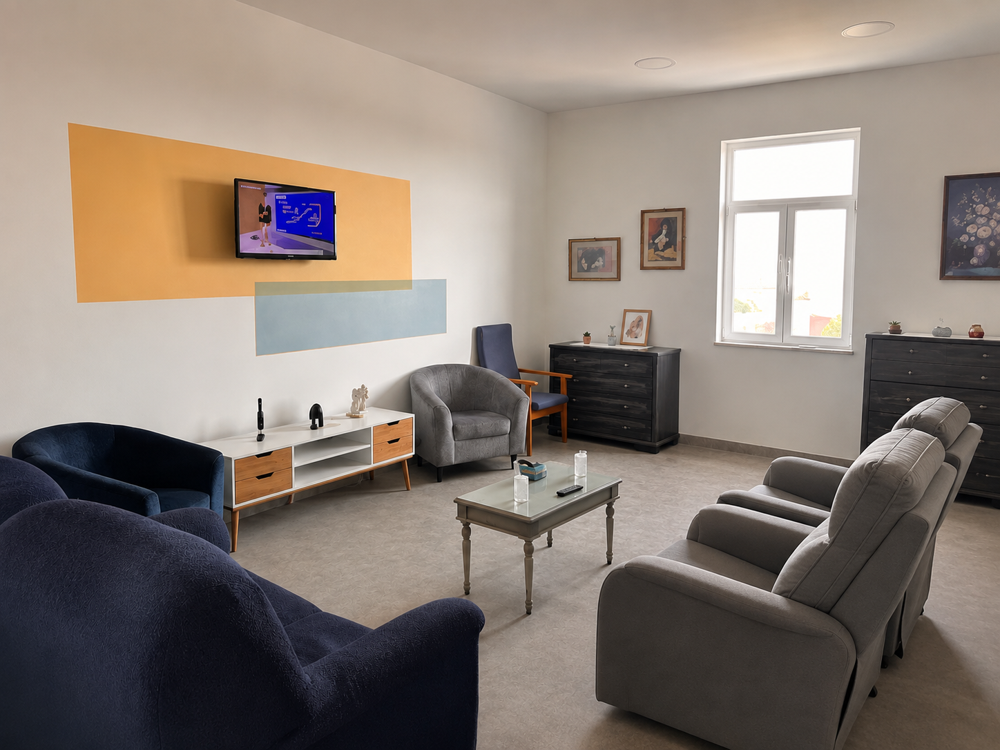
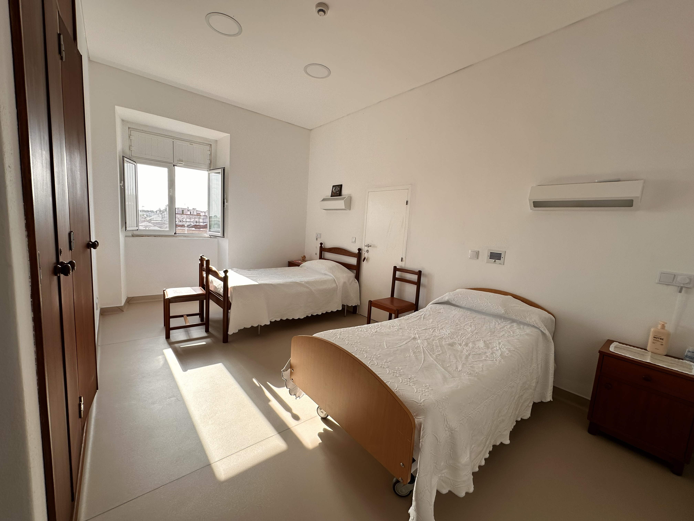
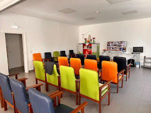
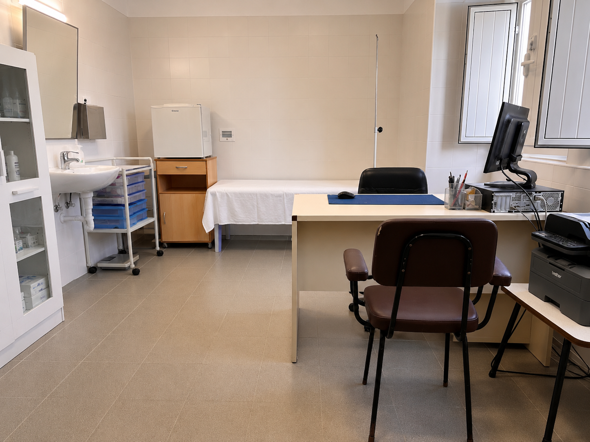
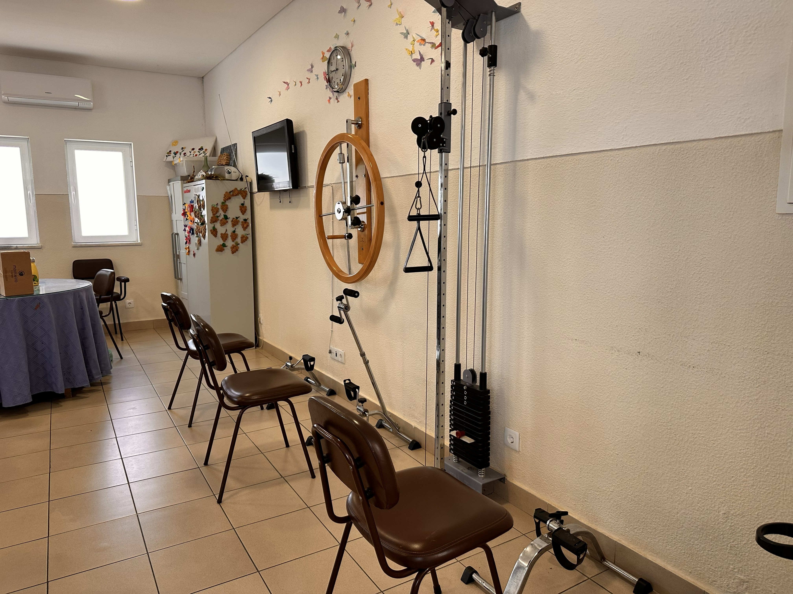
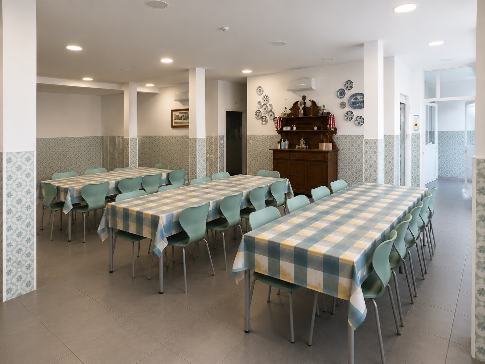

Conheça alguns dos espaços da nossa ERPI.






Sobre a ERPI
A Fundação Centro Social Nossa Senhora do Paço oferece aos seus utentes um conjunto de serviços que permite assistir a pessoa idosa não apenas como ser único e individual, mas também como agente de socialização integrado num grupo e no meio que a rodeia.
A ERPI tem como missão acolher e prestar assistência de elevada qualidade a pessoas que desejem partilhar os seus anos de maior serenidade em convívio, descanso, bem-estar e segurança.
A nossa filosofia assenta na promoção do bem-estar físico, emocional e social, respeitando a história, a individualidade e a dignidade de cada pessoa.
Objetivos
Promover a qualidade de vida.
Proporcionar serviços permanentes e adequados às necessidades biopsicossociais das pessoas idosas.
Contribuir para a estabilização ou retardamento do processo de envelhecimento.
Privilegiar a interação com a família, pessoas significativas e comunidade.
Promover estratégias de reforço da autoestima, valorização e autonomia pessoal e social.
Contacte-nos
Pretende obter mais informações sobre esta resposta social, esclarecer alguma dúvida ou agendar uma visita? Teremos todo o gosto em ajudá-lo.